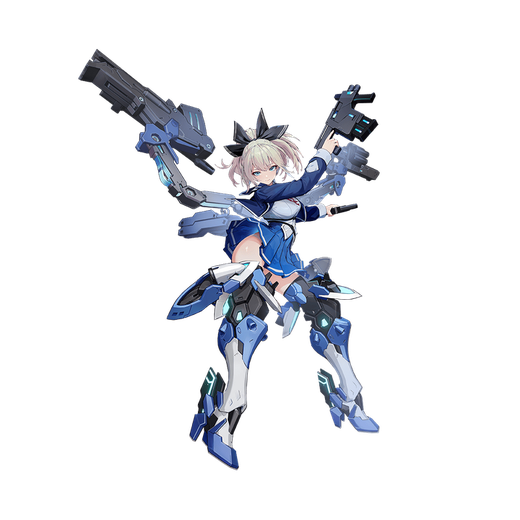

基本データ
- コスト
- 2.5
- 体力
- 未入力
- 赤ロック
- 35
- 動画
- 登録動画

Move Table
| 射撃 | 名称 | 弾数 | 威力 | 備考 |
|---|---|---|---|---|
| メイン射撃 | デュアルサブマシンガン | 60(4凸時72) | 26～412 | 両手持ちのマシンガン |
| N/前後サブ射撃 | 機動戦術 | 1(5凸時2) | 30～374 | 入力方向にジャンプし回転連射、誘導切り有り |
| 横サブ射撃 | 機動戦術 | 1(5凸時2) | 30～336/594 | 左右方向に移動しつつ回転連射、誘導切り無し |
| Nサブ格闘 | グレネードランチャー | 6 | 158~653 | スタン属性の弾を発射。長押しで連射 |
| 横サブ格闘 | グレネードランチャー・側転 | 120～225 | - | 1凸で解禁、側転しながら2連射 |
| 後サブ格闘 | 対物ライフル | 2 | 420 | 高弾速高火力。N/横格からサブ格入力で出せる |
| 格闘 | 名称 | 入力 | 弾数 | 威力 | 備考 |
|---|---|---|---|---|---|
| メイン格闘 | 突撃戦術 | NNN | - | 507 | カット耐性良好なガン=カタ |
| 横格闘 | 突撃戦術 | 横N | - | 438 | 発生の早い主力格闘 |
| 前格闘 | 突撃戦術 | 前 | - | 195 | 接地判定付きのピョン格、各種ムーブの主力 |
| 後格闘 | 囮戦術 | 後 | 1 | 654 | 弾数制の格闘カウンター、脅威の0F発生 |
| バーストアタック | 名称 | - | 威力 | ||
| SB/FMD | - | 備考 | |||
| バーストアタック | 全弾発射・カゼ | - | 1043/945 | 全武装セブンガンを同時に発射するフルオープンアタック |